The policy for a Java runtime, specifying which permissions are available for code from various sources, is represented by a Policy object. The default Policy implementation obtains its information from static ASCII policy configuration files.
A policy file can be composed via a simple text editor, or via the graphical Policy Tool utility described in this document. Using the Policy Tool saves typing and eliminates the need for you to know the required syntax of policy files, thus reducing errors.
The Permissions and Policy Files Overview section of this document describes what permissions are, and provides information about policy file contents and default policy files. It also supplies links to more detailed discussions of these topics.
The Policy Tool Usage section describes how to use the Policy Tool to create and modify policy files.
The Examples section provides detailed examples of the use of Policy Tool.
The See Also section provides links to related documentation.
This section briefly describes what permissions are, and provides information about policy file contents and default policy files.Permissions
A permission represents access to a system resource. In order for a resource access to be allowed for an applet (or an application running with a security manager), the corresponding permission must be explicitly granted to the code attempting the access.
A permission typically has a name (often referred to as a "target name") and, in some cases, a comma-separated list of one or more actions. For example, to create a permission to read the file named "abc" in the
D:\tmp\directory, you'd create a File Permission (technically, a java.io.FilePermission permission) with target name "D:\tmp\abc" and action string "read".In the default Policy implementation, code trying to read the file must be granted the specified permission by a "policy entry" (sometimes referred to as a "grant entry") in a policy configuration file. The Policy Tool can be used to create such an entry in such a file.
The Permissions document contains tables that describe the built-in permission types and that discuss the risks of granting each permission. It also contains tables showing the methods that require permissions to be in effect in order to be successful, and for each lists the required permission.
Default Policy Files and Their Locations
There is by default a single system-wide policy file, and an optional user policy file.
The system policy file is by default located at
java.home\lib\security\java.policyHere, java.home is the runtime environment's directory (the jre directory in the SDK or the top-level directory of the Java 2 Runtime Environment).
The user policy file is by default located at
user.home\.java.policyHere, user.home indicates the user's home directory.
When the Policy is initialized, the system policy is loaded in first, and then the user policy is added to it. If neither policy is present, a built-in policy is used. This built-in policy is the same as the original sandbox policy.
Policy file locations are specified in the security properties file, which is located at
java.home\lib\security\java.securityThe policy file locations are specified as the values of properties whose names are of the formpolicy.url.nHere,nindicates a number. You specify each such property value in a line of the following form:Here, URL is a URL specification. For example, the default policy files, sometimes referred to as the "system" and "user" policy files, respectively, are defined in the security properties file aspolicy.url.n=URLpolicy.url.1=file:${java.home}/lib/security/java.policy policy.url.2=file:${user.home}/.java.policyNote: when a string like
${some.property}appears in a policy file, or in the security properties file, it will be expanded to the value of the specified system property. For example,${java.home}indicates the value of the java.home property specifying the runtime environment's directory (the jre directory in the SDK or the top-level directory of the Java 2 Runtime Environment).Whether or not property expansion is allowed is controlled by the value of the "policy.expandProperties" property in the security properties file. If the value of this property is true (the default), expansion is allowed.
You can actually specify a number of URLs in the security properties file (including ones of the form "http://"), and all the designated policy files will get loaded. You can also comment out or change the second one to disable reading the default user policy file.
The algorithm starts at policy.url.1, and keeps incrementing until it does not find a URL. Thus if you have policy.url.1 and policy.url.3, policy.url.3 will never be read.
It is also possible to specify an additional or a different policy file when invoking execution of an application. This can be done via the "-Djava.security.policy" command-line argument, which sets the value of the java.security.policy property. For example, if you type the following, where pURL is a URL indicating the location of a policy file, then the specified policy file will be loaded in addition to all the policy files that are specified in the security properties file.
java -Djava.security.manager -Djava.security.policy=pURL SomeApp(The "-Djava.security.manager" argument ensures that the default security manager is installed, and thus the application is subject to policy checks. It is not required if the application SomeApp installs a security manager.)If you instead type the following, using a double equals, then just the specified policy file will be used; all others will be ignored.
java -Djava.security.manager -Djava.security.policy==pURL SomeAppIf you want to pass a policy file to the appletviewer, again use a "-Djava.security.policy" argument as follows:
appletviewer -J-Djava.security.policy=pURL myAppletPlease note: The "-Djava.security.policy" policy file value will be ignored (for both java and appletviewer commands) if the "policy.allowSystemProperty" property in the security properties file is set to false. The default is true.Policy File Contents
A policy configuration file (policy file, for short) indicates what permissions are allowed for code from specified code sources.A policy configuration file contains a list of entries. It may contain a single "keystore" entry, and contains zero or more "policy" (or "grant") entries.
A keystore is a database of private keys and their associated digital certificates such as X.509 certificate chains authenticating the corresponding public keys. The keytool utility is used to create and administer keystores. The keystore specified in a policy configuration file is used to look up the public keys of the signers (if any) specified in the grant entries of the file. Public keys are used to verify the digital signatures used to sign the code.
A keystore entry must appear in a policy configuration file if any policy entries specify signer aliases.
At this time, there can be only one keystore entry in the policy file. The keystore entry specifies the URL location of the keystore and optionally the keystore type. The URL is relative to the policy file location. Thus if the policy file is specified in the security properties file as:
policy.url.1=http://foo.bar.com/blah/some.policyand that policy file has a keystore entry with value ".keystore" then the keystore will be loaded from:http://foo.bar.com/blah/.keystoreThe URL can also be absolute.A keystore type defines the storage and data format of the keystore information, and the algorithms used to protect private keys in the keystore and the integrity of the keystore itself. If you don't specify a type, it is assumed to be that specified by the "keystore.type" property value in the security properties file. The value is initially "JKS", specifying a proprietary keystore type supported by Sun Microsystems.
Code being executed is always considered to come from a particular "code source". The code source may include not only the CodeBase location (URL) where the applet (or application) originated from, but also a reference to one or more (symbolic) alias names from a keystore specifying the keystore entries containing the public key(s) corresponding to the private key(s) used to sign the code.
Each policy entry in the policy file contains the following:
- an optional CodeBase entry specifying the URL location where the code originates from,
- an optional SignedBy entry specifying the alias name from the keystore used to reference the signer whose private key was used to sign the code, and
- one or more permission entries specifying which permissions are granted to code from the specified CodeBase and signed by the specified SignedBy alias.
Starting Policy Tool
To start Policy Tool, simply type the following at the command line.policytoolThis brings up the "Policy Tool" window.
Whenever Policy Tool is started, it tries to fill in this window with policy information from what is sometimes referred to as the "user policy file". The user policy file is by default a file named
.java.policyin your home directory. If Policy Tool cannot find the user policy file, it reports the situation and displays a blank "Policy Tool" window (that is, a window with headings and buttons but no data in it):
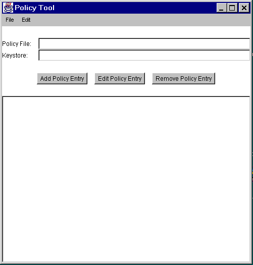 You can then proceed to either open whatever policy file you want to work on or create a new policy file, by adding policy entries, optionally specifying a keystore, and saving the file).
The first time you run the Policy Tool, there will not be a user policy file (unless you created one manually).
Creating a new Policy File
To create a new policy file, start by simply selecting the New command from the File menu. This will close the currently open policy file (if any, after first prompting you to save it if needed) and bring up a new policy tool window, that is, a window with headings and buttons but no data in it.Please Note: this is not necessary the first time you run the Policy Tool. Since the tool tries to open the user policy file and one doesn't exist yet (unless it was created manually), the tool will bring up a window without any data in it.
Once you have a new policy tool window, you can then create the policy entries, and specify the keystore (if any of the policy entries specify a keystore alias). At any point, you can save the policy file.
Opening a Different Policy File
To work on a different policy file than the one currently being worked on (if any), use the Open command in the File menu.This will close the currently open policy file (if any, after first prompting you to save it if needed) and will present you with an Open dialog, which you can use to navigate the directory structure until you get to the directory containing the policy file you want to work on. Select that file, then select the Open button.
The "Policy Tool" window will then be filled in with information from the policy file, including the policy file name, the keystore URL (if any), and the CodeBase and SignedBy parts of each policy entry in the policy file.
Specifying the Keystore
To specify the keystore containing the key information for the aliases specified in the SignedBy parts of policy entries, select the Change Keystore command in the Edit menu.This brings up a dialog box in which you specify the new keystore URL and optionally the keystore type.
As an example, to specify the keystore named "mykeystore" in the
Testsdirectory on theD:drive, type the followingfile:URL into the text box labeled "New KeyStore URL".file:/D:/Tests/mykeystoreTo also specify that the keystore type is "JKS" (the proprietary keystore type supported by Sun Microsystems), type the following into the text box labeled "New KeyStore Type".JKSNote: the "New KeyStore URL" value is a URL and thus should always utilize slashes (never backslashes) as the directory separator, even when the keystore is actually on a Windows system.
When you are done specifying the keystore URL and type (if any), select OK (or you can select Cancel to cancel the operation). If you didn't cancel, the text box labeled "Keystore:" is now filled in with the keystore URL and type.
Adding a New Policy Entry
To add a new policy entry, select the Add Policy Entry button in the main "Policy Tool" window.This brings up a "Policy Entry" dialog box:
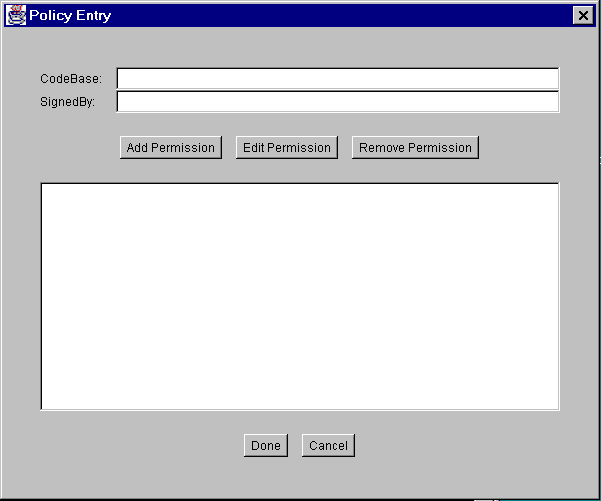 Using this dialog box, you specify
- an optional CodeBase entry indicating the URL location where the code originates from. For example, to indicate code from the local
JavaSoft\TESTS\directory on theD:drive, type the following file URL into the CodeBase text box:file:/D:/JavaSoft/TESTS/Note: a CodeBase value contains a URL and thus should always utilize slashes (never backslashes) as the directory separator, even when the code source is actually on a Windows system.
- an optional SignedBy entry indicating the alias name from the keystore used to reference the signer whose private key was used to sign the code. For example, to indicate the alias named "duke", simply type the following into the SignedBy text box:
duke
- one or more permission entries indicating which permissions are granted to the code from the source indicated by the CodeBase and SignedBy values (or to any code if no such values are specified). See Adding a New Permission.
The SignedBy value is a string alias that is mapped (using the keystore) to a set of public keys that are associated with the signers. These keys are used to verify that classes from the specified code source are really signed by these signers.
The SignedBy value can be a comma-separated string containing names of multiple signers, an example of which is "Adam,Eve,Charles", which means "signed by Adam and Eve and Charles" (i.e., the relationship is AND, not OR).
The SignedBy value is optional in that, if it is omitted, it signifies "any signer," or in other words, it doesn't matter whether the code is signed or not. Similarly, if there is no CodeBase entry, then it signifies "any code"; it doesn't matter where the code originates from.
Thus, if there is no CodeBase entry, then all code signed by the specified alias(es) will be granted the specified permissions. If there is no SignedBy entry, then all code from the specified CodeBase will be granted the specified permissions, regardless of whether the code is signed or not, and by whom. If there is no CodeBase entry, and also no SignedBy entry, then all code will be granted the specified permissions.
Note: The exact meaning of a CodeBase value depends on the characters at the end. A CodeBase with a trailing "/" matches all class files (not JAR files) in the specified directory. A CodeBase with a trailing "/*" matches all files (both class and JAR files) contained in that directory. A CodeBase with a trailing "/-" matches all files (both class and JAR files) in the directory and recursively all files in subdirectories contained in that directory.
Adding a New Permission
To add a new permission, select the Add Permission button in the "Policy Entry" dialog box. This brings up the "Permissions" dialog box:
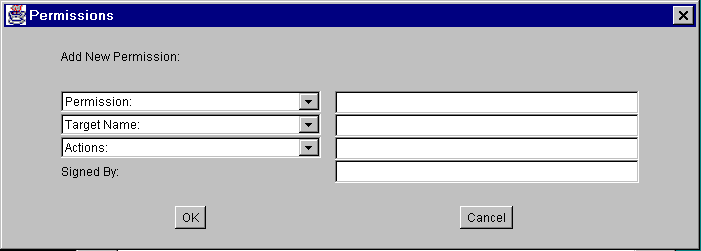 To add the permission:
When you are done specifying the permission information, select the OK button (or Cancel to cancel). The new permission appears in a line in the "Policy Entry" dialog.
- Type or select a permission type.
The drop-down list labeled "Permission:" contains a list of built-in permission types. If you want such a type, select it from the list, and the complete permission type name appears in the text box to the right of the drop-down list.
If you instead want to specify a permission type defined by you or others, type the permission type into the text box.
- Type or select a permission target name.
If you selected a built-in permission from the "Permission:" drop-down list, and permissions of that type have specific target name values, then the drop-down list labeled "Target Name:" contains a list of those values, from which you can choose.
In some cases, where the target name possibilities are infinite but there are some built-in target name specifications that have special meaning, such target names will appear in the drop-down list. For example, the special target name of "<<All Files>>" will appear in the list for File Permissions.
To specify a target name not available in the drop-down list, type the target name directly into the text box to the right of the "Target Name:" drop-down list. For example, to specify the file named
datain theJavaSoft\ptTest\directory on theD:drive, typeD:\JavaSoft\ptTest\data
- Type or select one or more actions, if actions are relevant.
Some permissions just have a target name, but no actions. For such permissions, leave the text box to the right of the "Actions:" drop-down list blank. (It will automatically be darkened and unavailable for this type of built-in permission.)
For permissions requiring action specifications, type the comma-separated list of actions into the text box, or select them from the drop-down list. For example, to specify both read and write access to a file specified for a File Permission, first select
read(orwrite, order doesn't matter) from the list. The word "read" appears in the text box. Then selectwrite, and the word "write" will be appended, preceded by a comma and a space.
- Type a SignedBy alias into the text box to the right of the "Signed By" label, if required. The SignedBy value for a permission entry is optional. If present, it indicates a signed permission. That is, the permission class itself must be signed by the given alias(es) in order for the permission to be granted.
You can then add additional permissions by following the same sequence of steps. Or you can edit an existing permission or remove a permission.
Editing a Permission
To edit an existing permission, select the line for that permission in the "Policy Entry" dialog box, then select the Edit Permission button. Alternatively, you can simply double-click the line for that permission.This brings up the same type of "Permissions" dialog box as appears when you are adding a new permission, except in this case the dialog box is filled in with the existing permission information. To change the information, either make new selections from the drop-down lists or replace the information in the text boxes.
When you are done, select the OK button (or Cancel to cancel changes). The "Policy Entry" dialog now shows the permission with any modifications you made.
Removing a Permission
To remove an existing permission, select the line for that permission in the "Policy Entry" dialog box, then select the Remove Permission button.Completing the Addition of a Policy Entry
Once you are done adding a policy entry, select the Done button in the "Policy Entry" dialog, or Cancel to cancel.If you selected Done, the "Policy Tool" window now contains a line representing the policy entry. The line just contains the CodeBase and SignedBy information (if any). If neither was specified in the "Policy Entry" dialog, just
CodeBase <ALL>appears.Note: a warning is displayed upon closing the policy entry if it contains any SignedBy aliases that don't yet exist in your keystore. Select OK and make a note to create such an alias, or edit the policy entry to fix the alias if was wrong.
Editing a Policy Entry
To edit an existing policy entry, select the line for that entry in the main "Policy Tool" window, then select the Edit Policy Entry button. Alternatively, you can simply double-click the line for that entry.This brings up the same type of "Policy Entry" dialog box as appears when you are adding a new policy entry, except in this case the dialog box is filled in with the existing policy entry information. To change the information, simply retype it (for the CodeBase and SignedBy values) or add, remove , or modify permissions.
When you are done, select the Done button (or Cancel to cancel).
Removing a Policy Entry
To delete a policy entry from the policy file, select the line for that entry in the main "Policy Tool" window, then select the Remove Policy Entry button.The complete policy entry is displayed, and you can then either select OK to remove the entry, or Cancel to keep it.
Saving the Policy File
To save changes to an existing policy file, simply select the Save command in the File menu.
To save a new policy file you've been creating, or to copy an existing policy file to a new policy file with a different name, select the Save As command from the File menu. This brings up the Save As dialog box.
Navigate the directory structure to get to the directory in which you want to save the policy file. Type the desired file name, then select the Save button. The policy file is now saved, and its name and path are shown in the text box labeled "Policy File:"
Exiting the Policy Tool
To exit Policy Tool, select the Exit command from the File menu.Viewing the Warning Log
If Policy Tool ever reports that warnings have been stored in the Warning Log, you can view the log by selecting the View Warning Log command in the Edit menu.For example, if you have a policy file with a Keystore URL specifying a keystore that doesn't yet exist, you will get such a warning at various times, e.g., when you open the file. You can continue to work on the policy file even if warnings exist.
Note Regarding File Specifications
Note: On Windows systems, when you type a file name and path into a Policy Tool dialog box (e.g., as a FilePermission target name), you can use any of the following as the directory separator:
Single backslashes are the "normal" Windows directory separators, and slashes are also accepted.
- a single backslash, as in
D:\Temp\data- a double backslash, as in
D:\\Temp\\data- a slash, as in
D:/Temp/dataHowever, policy files themselves cannot contain single backslashes. When a policy file is read, the strings are processed by a tokenizer, which allows "\" to be used as an escape string (e.g., "\n" to indicate a new line) and which thus requires two backslashes to indicate a single backslash.
If you use single backslashes as your separators, Policy Tool automatically converts them to double backslashes (e.g., after you select OK in the Permissions dialog box), for your convenience.
Note Regarding Windows "Home" Directories
The user policy file is by default the file named.java.policyin your "home directory," as determined by the user.home system property value. Given user name uName, the user.home property value defaults toC:\Winnt\Profiles\uName on multi-user Windows NT systems C:\Windows\Profiles\uName on multi-user Windows 95 systems C:\Windows on single-user Windows 95 systemsThus, if the user name is "cathy", user.home defaults toC:\Winnt\Profiles\cathy on multi-user Windows NT systems C:\Windows\Profiles\cathy on multi-user Windows 95 systems C:\Windows on single-user Windows 95 systems
The following examples show how to
- create the user policy file from scratch
- add a policy entry
- specify a keystore
- add a policy entry for signed code
- save the user policy file, and
- exit the Policy Tool
Starting Creation of the User Policy File
Initially, there is no user policy file (unless you created one manually). So to create the user policy file, first simply start Policy Tool by typing the following at the command line.
policytoolThis brings up the "Policy Tool" window.
Whenever Policy Tool is started, it tries to fill in this window with policy information from what is sometimes referred to as the "user policy file". The user policy file is by default a file named
.java.policyin your home directory. If Policy Tool cannot find the user policy file, it reports the situation and displays a blank "Policy Tool" window (that is, a window with headings and buttons but no data in it):
You can now create the user policy file by adding entries and saving the file.
Adding a Policy Entry
Suppose you want to grant all classes from theTests\directory on theD:drive permission to read the file namedmydatain theD:\Temp\data\directory. To do so, first select the Add Policy Entry button in the main "Policy Tool" window.This brings up a "Policy Entry" dialog box:
Using this dialog box, type the file URL
file:/D:/Tests/into the CodeBase text box. (Note, this is a URL and thus must always have slashes, not backslashes.)Leave the SignedBy text box blank, since you aren't requiring the code to be signed.
To add the permission, select the Add Permission button. This brings up the "Permissions" dialog box:
To add the permission:
Now the "Permission" dialog box looks like the following:
- Select "File Permission" from the "Permission:" drop-down list. The complete permission type name (java.io.FilePermission) now appears in the text box to the right of the drop-down list.
- Type the following in the text box to the right of the list labeled "Target Name:":
D:\Temp\data\mydata- Specify read access by selecting "read" from the "Actions:" drop-down list.
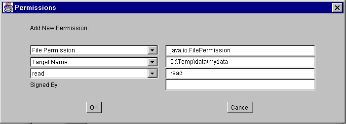 When you are done specifying the permission information, select the OK button. The new permission appears in a line in the "Policy Entry" dialog.
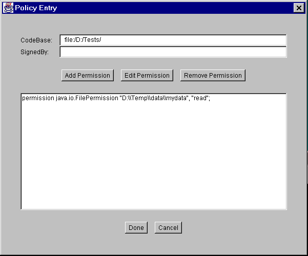 Note: Each backslash in the file path you typed has been replaced with two backslashes, as described in Note Regarding File Specifications.
You are now done specifying this policy entry, so select the Done button. The "Policy Tool" window now contains a line representing the policy entry. The line just contains the CodeBase value:
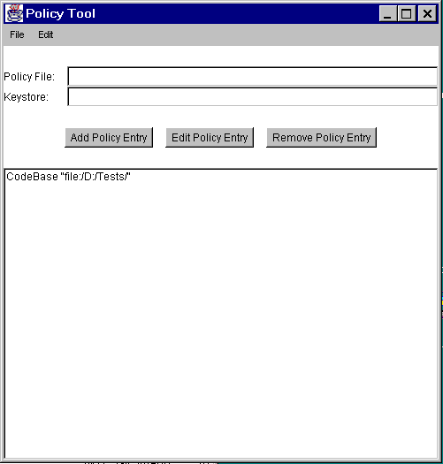 Specifying a Keystore
Suppose you also want to grant any code from the URL "http://java.sun.com/" and signed by the alias "duke" read access to all files in theD:\tmp\directory. Suppose you also want to give such code permission to initiate outgoing socket connections to any hosts. You need to do two things:To specify the keystore containing the key information for the aliases specified in any SignedBy parts of policy entries, select the Change Keystore command in the Edit menu of the main "Policy Tool" window.
- Specify the keystore containing the alias, and
- Create the policy entry granting the permissions.
This brings up a dialog box in which you specify the new keystore URL and optionally the keystore type.
As an example, to specify the keystore named "mykeystore" in the
Testsdirectory on theD:drive, type the followingfile:URL into the text box labeled "New KeyStore URL":file:/D:/Tests/mykeystoreIf the keystore type is the default type, as specified by the "keystore.type" property value in the security properties file, you don't need to type a "New KeyStore Type" value. The default value of that property is "JKS" (the proprietary keystore type supported by Sun Microsystems).To specify the keystore type, type its value into the text box labeled "New KeyStore Type." For example, to indicate that the keystore type is "JKS" type
JKSThe result is:
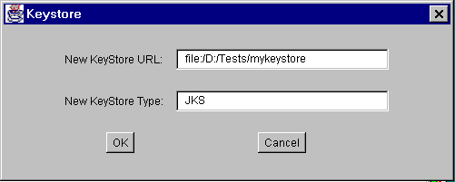 Note: the "New KeyStore URL" value is a URL and thus should always utilize slashes (never backslashes) as the directory separator, even when the keystore is actually on a Windows system.
When you are done specifying the keystore URL and type, select OK. The text box labeled "Keystore:" is now filled in with the URL and type.
Next, you need to specify the policy entry:
Adding a Policy Entry with a SignedBy alias
Select the Add Policy Entry button in the main "Policy Tool" window. This brings up the "Policy Entry" dialog box. Type the following into the the CodeBase text box:http://java.sun.com/*The "*" indicates that both class and JAR files in the specified directory are to be considered to match this CodeBase.Now, type the following alias into the SignedBy text box:
dukeTo add the first permission, select the Add Permission button. This brings up the "Permissions" dialog box. Do the following
Now the "Permissions" dialog box looks like the following:
- Select "File Permission" from the "Permission:" drop-down list. The complete permission type name (java.io.FilePermission) now appears in the text box to the right of the drop-down list.
- Type the following in the text box to the right of the list labeled "Target Name:" to specify all files in the
D:\tmp\directory:D:\tmp\*- Specify read access by selecting "read" from the "Actions:" drop-down list.
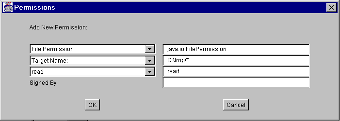 Select the OK button. The new permission appears in a line in the "Policy Entry" dialog.
Now you need to add the other permission. Select the Add Permission button. In the "Permissions" dialog box, do the following
Now the "Permissions" dialog box looks like the following:
- Select "Socket Permission" from the "Permission:" drop-down list. The complete permission type name (java.net.SocketPermission) now appears in the text box to the right of the drop-down list.
- Type the following in the text box to the right of the list labeled "Target Name:" to specify all hosts:
*- Specify permission to make connections by selecting "connect" from the "Actions:" drop-down list.
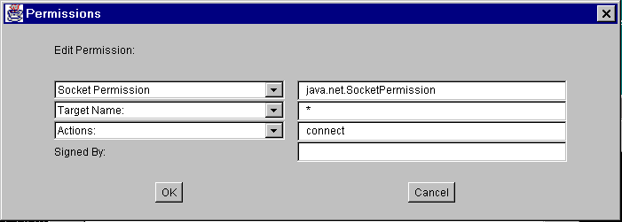 Select the OK button. The new permission appears in a line in the "Policy Entry" dialog.
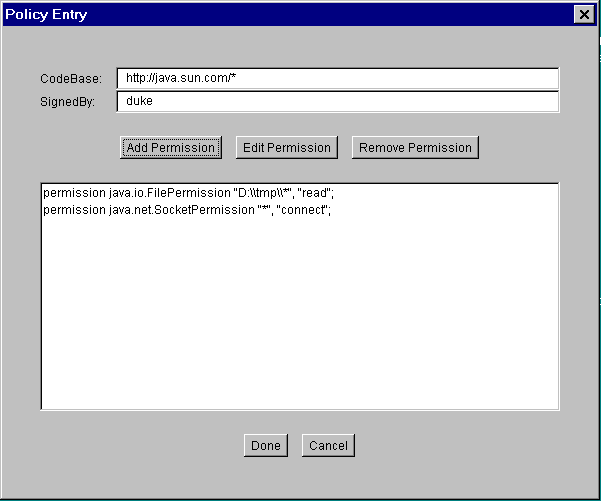 Note: Each backslash in the file path you typed has been replaced with two backslashes, as described in Note Regarding File Specifications.
You are now done specifying this policy entry, so select the Done button in the "Policy Entry" dialog. The "Policy Tool" window now contains a line representing the policy entry, showing the CodeBase and SignedBy values.
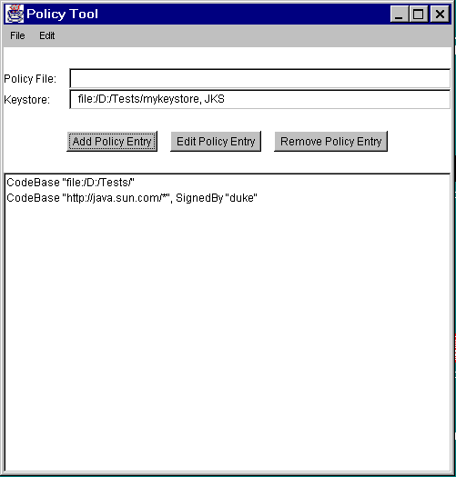 Saving the User Policy File
Let's assume you're working on a Win95 system and you want to save the policy file you've been creating with the default name (.java.policy) in the default location (C:\Windows\).To save the user policy file, select the Save As command from the File menu. This brings up the Save As dialog box.
Navigate the directory structure to get to the Windows directory on the
C:drive. Type.java.policy(note the initial period) as the file name, then select the Save button. The policy file is now saved, and its name and path are shown in the text box labeled "Policy File:"
Exiting Policy Tool
When you want to exit Policy Tool, do so by selecting the Exit command from the File menu.
- Permissions
- Default Policy Information and Policy File Syntax
- keytool tool documentation
- Security Architecture Specification
- The Security trail of the Java Tutorial for examples of the use of the security tools including Policy Tool